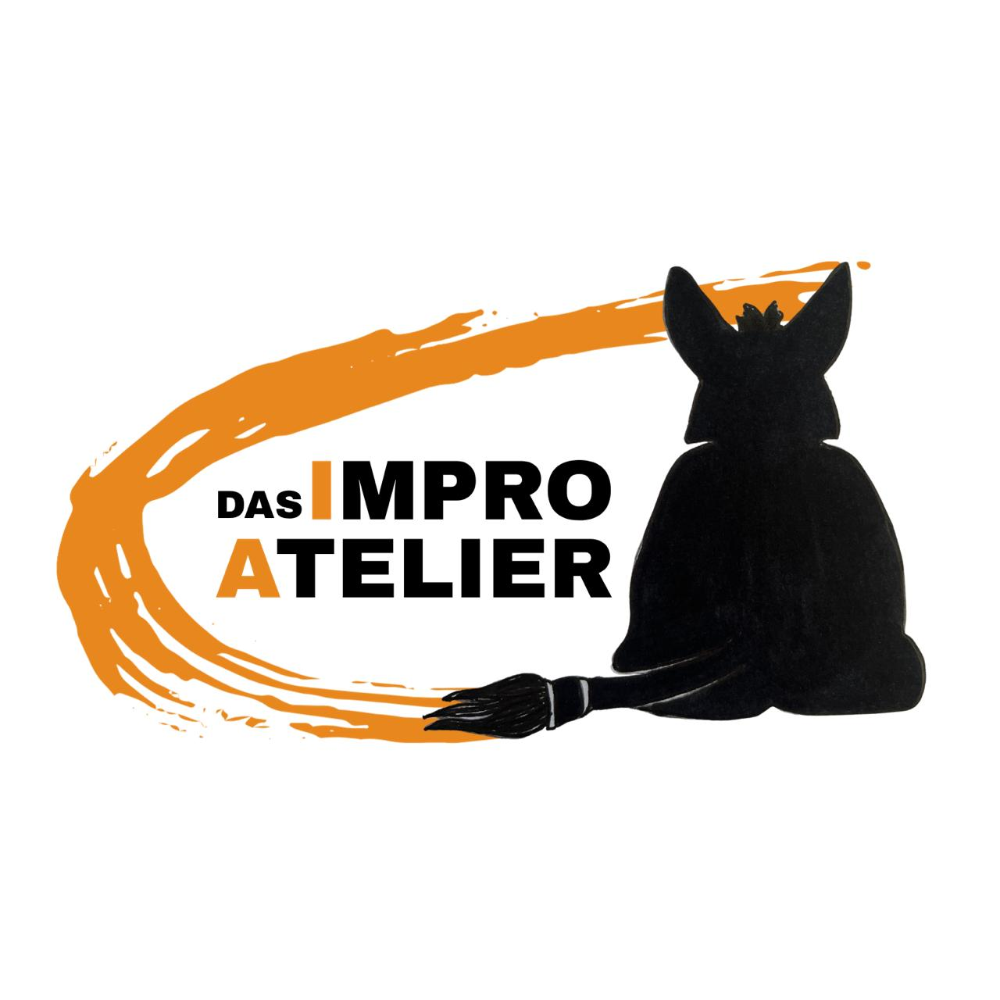

Theater ohne Skript, ohne Netz. Nur der Moment, das Publikum und ziemlich viel Handwerk. Jeden Abend ein Original.

Das ImproAtelier ist ein Ensemble, das glaubt, dass die interessantesten Momente auf der Bühne die sind, die niemand geplant hat — und dass es Handwerk braucht, um diesen Momenten zu vertrauen.
Wir nennen das, was wir tun, deshalb Atelier: ein Ort, an dem etwas entsteht, das es vorher nicht gab, und an dem die Spuren des Entstehens sichtbar bleiben dürfen.
Was herauskommt, entscheidet das Publikum. Jeden Abend neu.
Impro gibt's nicht als Wiederholung. Wer dabei war, war dabei.
Weitere Termine sind in Planung. Schreib uns — wir sagen dir Bescheid.
Fotos folgen in Kürze.
Auftrittsanfrage, Workshop oder einfach nur „hallo" — eine Antwort improvisieren wir.
hallo@dasimproatelier.deAls gemeinnütziger Verein dürfen wir Spenden entgegennehmen!
Damit eure Spende steuerlich und buchhalterisch korrekt erfasst werden kann, beachtet bitte folgende Hinweise: